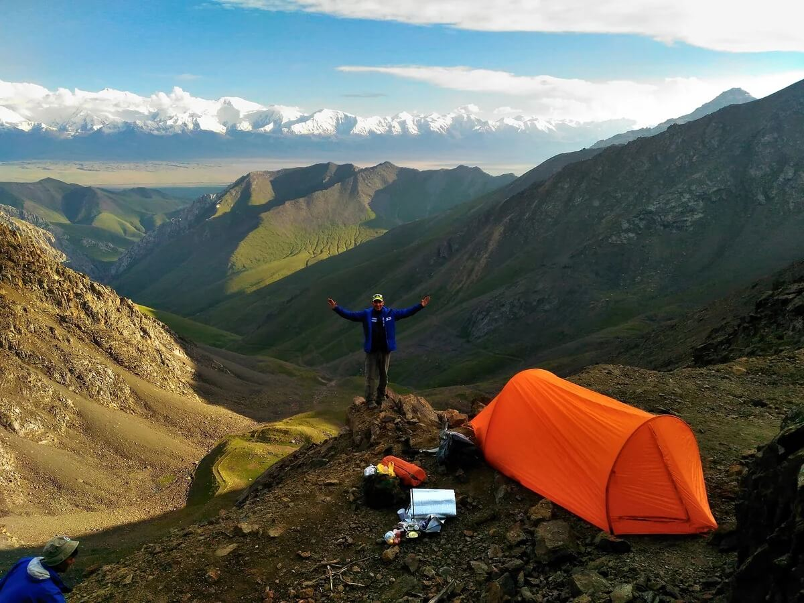

Трекинг походы
Треккинг - это изначально английское слово, означающее "пеший поход". Треккинг включат в себя пешие походы и экскурсии. Туристы ночуют в палатках или горных домиках (небольших деревянных или каменных строениях, расположенных вдоль маршрута).

Еда готовится на костре. Рядом, как правило, есть чистая природная вода (иногда в виде снега) для питья и умывания. Можно еще добавить и такой атрибут пеших походов, как песни под гитару у костра. Маршруты для пешеходных прогулок и походов могут быть разной протяженности. Одно- или двух- дневный теккинг доступен любому. Существуют туристические походы для начинающих с облегченной программой
Треккинг полон событий и новых ощущений. Туристические походы в горы называются восхождениями и также пользуются большим спросом. И не удивительно, что в последнее время этот вид активного отдыха стал так популярен. Пешие походы дают возможность соприкоснуться с природой, увидеть редкие пейзажи, испытать себя в преодолении самых разных препятствий - крутых перевалов, таежных дебрей.

За последнее время большое количество людей отдают предпочтение такому виду отдыха. Известные курорты с пляжами и шикарными отелями не прельщают их. Настоящим отдыхом они считают путешествие в страну неизведанного и неведомого. А самое главное то, что треккинг туры доступны любому человеку и не зависит от его возраста и состояния здоровья. Такое путешествие дает возможность увидеть свою страну или даже другую как бы изнутри с ее традициями и культурой, вдали от больших мегаполисов и городов.
На сегодняшний день наша турфирма может предложить вам большое количество уникальных маршрутов. Даже не выезжая за границы России, вы можете хорошо и, что самое главное, недорого отдохнуть. Ведь в каждой стране есть неизведанные уголки, где еще царствует дикая природа.